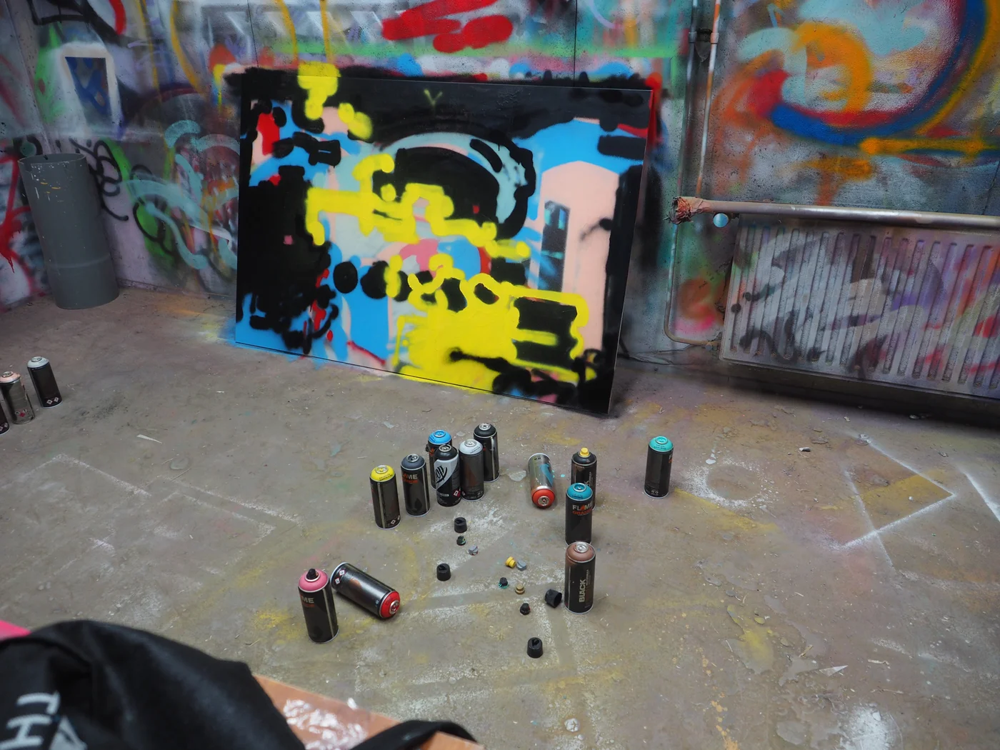
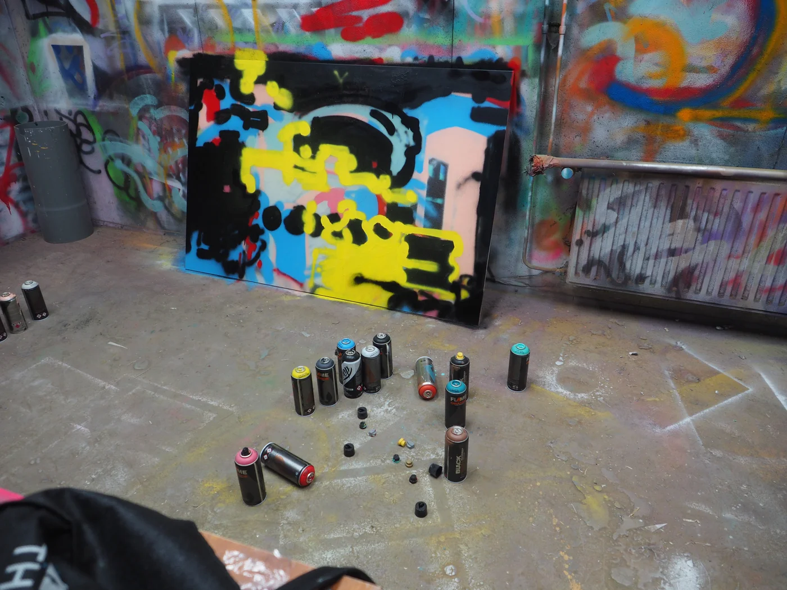
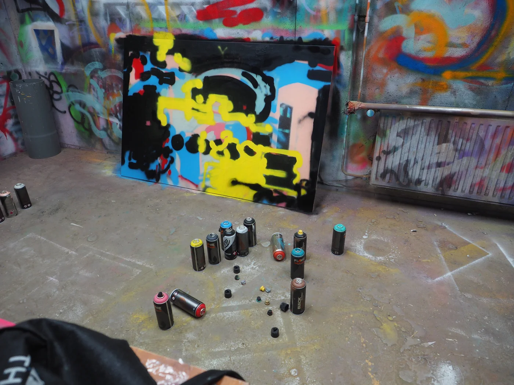

Good Time
A publication inspired by the 2017 thriller Good Time, directed by Benny and Josh Safdie, showcasing a series of original paintings created by Olivia Huynh while listening to Oneohtrix Point Never's soundtrack for the film.
